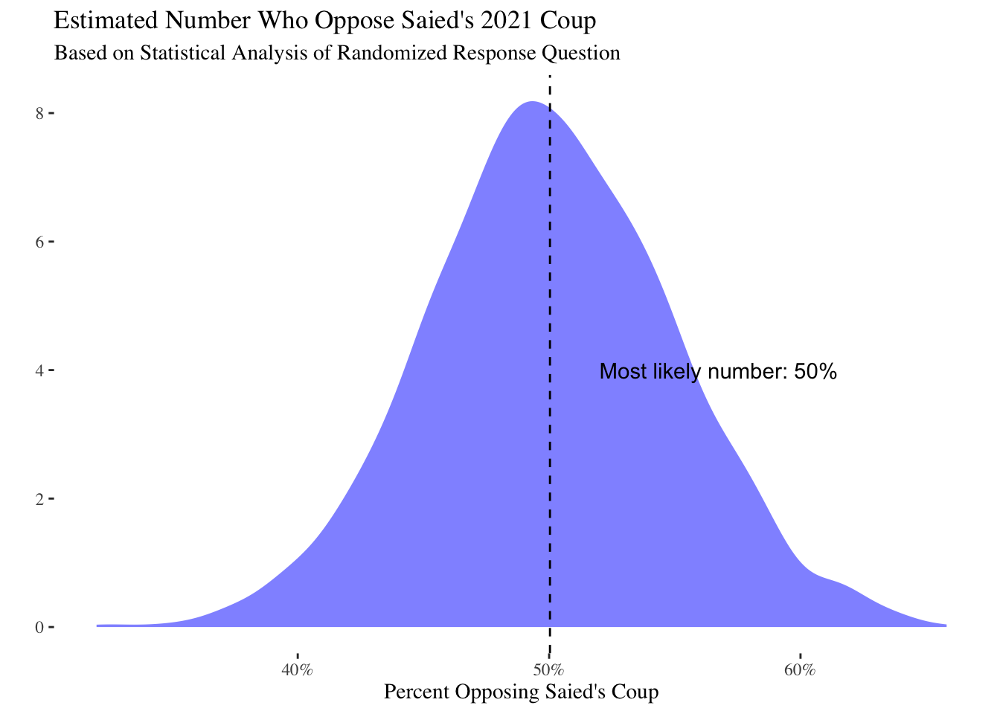

survey_data %>%
filter(`Duration (in seconds)`<10000) %>%
mutate(Duration=`Duration (in seconds)`/60) %>%
ggplot(aes(y=Duration,x=StartDate)) +
geom_point() +
scale_y_log10() +
geom_smooth()This Rmarkdown document contains code and data for the Kais Saied survey experiment by Robert Kubinec and Amr Yakout. This survey was fielded using an online panel in Tunisia during August of 2023. The survey experiment involved providing half the sample a direct question about whether they supported Kais Saied’s move to suspend parliament and centralize power in his hands, and the other half of the sample had a randomized response question designed to allow them to answer truthfully without being identified. This experiment was pre-registered and the pre-registration can be accessed from this link.
This document was drafted to allow people to verify our results using the raw data. The survey data included has been stripped of any identifying information about respondents, but it does include the actual answers from the survey so that all analyses can be reproduced. You can access the code file and the raw data from this Github repository: https://github.com/saudiwin/saudiwin.github.io/tree/sources/content/post (file is entitled kais_saied_results.Rmd and the data file is in the data/ subfolder). The survey data can be found in the data/ folder as kais_saied_survey.csv.
This Quarto document includes embedded R code that loads the survey data and estimates the Stan model for proportion of people who support Kais Saied, and compares it to the direct question to see if there is sensitive survey bias. At present there are a total of 913 completed responses.
All questions about the analysis should be directed to Robert Kubinec at rmk7@nyu.edu.
Robustness check: time of completion
In this section I show some general statistics for the data. In particular, I look at how long it takes people to complete the survey. In the plot below I show the average duration in minutes over time for each survey response. The plot shows that most people took the survey in about 10 to 30 minutes:
The plot also shows that data collection started in late July and continued until mid-August. Data came in fairly regularly on a daily basis.
Survey Design
In the survey we implemented a form of a randomized response question that is designed to help people report answers on a survey that they may be embarrassed about or in danger if they report. The question was originally developed for private medical information like abortion or HIV infections, and has been extended to cover crime, drug use and corruption reporting. See Hout and Heijden (2002), Gingerich et al. (2016) and Blair, Imai, and Zhou (2015) for more information.
The theory behind a randomized response is to inject randomness into the survey question. Theoretically it is similar to approaches in cryptography that use random numbers to encode online data using keys. In our case, we used naturally ocurring randomness related to people’s birthdays. Because we did not ask for respondents’ birth dates, and the month in which one is born is essentially random, we can use that naturally occurring randomness to encode their responses.
To test for how much we could encourage people to respond truthfully, we randomly assigned each respondent to receive one of the two questions below:
Direct Question
- Do you oppose President Kais Saied’s moves to change Tunisia’s constitution and close the parliament?
- Yes
- No
Randomized Response
We understand that politics in Tunisia is sensitive right now. This question is worded so that you can tell us what you think but still protect your privacy. Because we don’t know when your mother was born, we also won’t know for sure your political opinion.
- My mother’s birth date is in January, February or March.
- I oppose President Kais Saied’s moves to change Tunisia’s constitution and close the parliament.
Please pick the answer that best represents whether these statements are true of you:
- Both statements are true OR neither is true.
- One of the two statements is true.
While explaining how this question works is beyond the scope of this note, we again refer to the linked paper above for the statistical mechanics. As long as the respondent reads and follows the instructions, they can report their opposition (or support) for Kais Saied’s power grab without us being able to know their true response. Essentially, we can’t separate their answer from whether their mother’s birthday is in a given month, and as a result, the individual answers are encoded. For any respondent, we have no idea whether they oppose Saied or not.
However, the beauty of this method is that even though we don’t know any one person’s response, we can estimate how many in people in total support or oppose Saied. When we aggregate responses, we can take into account that on average \(\frac{1}{4}\) of our respondents will have mothers who were born in those months. Using statistical models that we estimate below, we can find out how many people truly oppose Saied, and also how many people appear to be under-reporting their opposition relative to the direct question.
Sensitivity Estimates
In this section we show several different ways that we calculate the true number of people who are opposed to Kais Saied. We first use a simple Bayesian calculation based on the beta distribution that was specified in the pre-registration linked above. We then look at other existing R packages that are used for randomized response questions and then we implement a custom Bayesian model that allows us to jointly model both the randomized response and the direct question. We also use this custom model to allow us to adjust for biases in using online panels that may not be fully representative.
# proportion selecting birthday response
lambda <- table(survey_data$kais_rr)
lambda <- lambda[2]/sum(lambda)
N <- sum(as.numeric(!is.na(survey_data$kais_rr) & survey_data$FL_63_DO_saied_sensitive==1))
to_stan_data <- list(success_cm=N*((lambda - .75)/(-.5)),
fail_cm= N*(1-((lambda - .75)/-.5)),
success_d=sum(as.numeric(survey_data$kais_direct=="Yes" & survey_data$FL_63_DO_saied_nonsensitive==1),na.rm=T),
fail_d=sum(as.numeric(survey_data$kais_direct=="No" & survey_data$FL_63_DO_saied_nonsensitive==1),na.rm=T))
fit_mod <- sen_mod$sample(chains=4, cores=4, data=to_stan_data,refresh=0)Running MCMC with 4 parallel chains...
Chain 1 finished in 0.0 seconds.
Chain 2 finished in 0.0 seconds.
Chain 3 finished in 0.0 seconds.
Chain 4 finished in 0.0 seconds.
All 4 chains finished successfully.
Mean chain execution time: 0.0 seconds.
Total execution time: 0.2 seconds.fit_mod$summary()# A tibble: 5 × 10
variable mean median sd mad q5 q95 rhat ess_bulk
<chr> <dbl> <dbl> <dbl> <dbl> <dbl> <dbl> <dbl> <dbl>
1 lp__ -853. -852. 1.23 1.01 -855. -851. 1.00 1998.
2 pi_hat 0.507 0.507 0.0244 0.0250 0.468 0.548 1.00 3616.
3 d_hat 0.298 0.298 0.0218 0.0218 0.262 0.334 1.00 3943.
4 d_hat_binomi… 0.298 0.297 0.0212 0.0211 0.263 0.333 1.00 3934.
5 estimand 0.210 0.210 0.0323 0.0319 0.157 0.264 1.00 3622.
# ℹ 1 more variable: ess_tail <dbl>We can plot the estimated bias as the difference between the average proportion of those responding affirmative to the direct question and the calculated level of opposition to Saied from the randomized response question:
estimand <- c(fit_mod$draws("estimand"))
mcmc_dens(fit_mod$draws("estimand")) +
theme_tufte() +
labs(x="Percent Increase Over Direct Question") +
scale_x_continuous(labels=scales::percent_format()) +
ggtitle("Difference Between Direct Question and Encrypted Question",
subtitle="Opposition to Saied's Coup")ggsave("bias_calc.png",width=5,height=4)Our basic model shows that approximately 21% of respondents reported anti-Saied preferences in the randomized response method versus the direct question. The 5% - 95% uncertainty interval is from 15.7 to 26.4 .
The full posterior density of the bias-corrected estimate is:
mcmc_dens(fit_mod$draws("pi_hat")) + theme_tufte()Comparing the two estimates as intervals (pi_hat is the true level of opposition to Saied and d_hat is the proportion from the direct question):
mcmc_intervals(fit_mod$draws(c("pi_hat","d_hat"))) + theme_tufte()Alternative Estimation: RRreg
In this section we use the R package RRreg to check these calculations using a more traditional means for estimating sensitive proportions.
est_rreg <- RRuni(response=as.numeric(comp_data_rr$kais_rr=="Both statements are true OR neither is true." & comp_data_rr$FL_63_DO_saied_sensitive==1),
p=.25,
model="Crosswise",MLest = TRUE)
summary(est_rreg)Crosswise Model with p = 0.25
Sample size: 425
Estimate StdErr z Pr(>|z|)
pi 0.507059 0.048563 10.441 < 2.2e-16 ***
---
Signif. codes: 0 '***' 0.001 '**' 0.01 '*' 0.05 '.' 0.1 ' ' 1s1 <- summary(est_rreg)Let’s compare these estimates with plots:
est_beta <- fit_mod$summary()
est_data <- tibble(estimate=c(s1$coefficients[,1],
est_beta$median[est_beta$variable=="pi_hat"]),
low=c(s1$coefficients[,1]-1.96*(s1$coefficients[,2]),
est_beta$q5[est_beta$variable=="pi_hat"]),
high=c(s1$coefficients[,1]+1.96*(s1$coefficients[,2]),
est_beta$q95[est_beta$variable=="pi_hat"]),
estimator=c("RRreg","Bayes"))
est_data %>%
ggplot(aes(y=estimate,x=estimator)) +
geom_linerange(aes(ymin=low,
ymax=high)) +
geom_point() +
theme_tufte()We can see that they are similar estimates, although the R package has higher uncertainty than the simple Bayesian estimate.
Alternative Estimator: rr
We can also use the R package rr which uses the EM algorithm as opposed to RRreg which uses more conventional optimization.
comp_data_rr$gender_two <- factor(comp_data_rr$gender,
exclude="Other:")
comp_data_rr <- filter(comp_data_rr, !is.na(gender_two))
# need to switch the outcome
comp_data_rr$kais_rr_num_switch <- 1 - comp_data_rr$kais_rr_num
rr_est <- rrreg(kais_rr_num_switch ~ as.character(gender_two),
data=comp_data_rr,
p=.75,
design='mirrored')
# predict sensitive trait
pred_rr <- predict(rr_est,quasi.bayes = T)
mean(pred_rr$est)[1] 0.5006138mean(pred_rr$est[comp_data_rr$gender_two=="Male"],na.rm=T)[1] 0.5191125mean(pred_rr$est[comp_data_rr$gender_two=="Female"],na.rm=T)[1] 0.4720857pred_rr_mean <- predict(rr_est,quasi.bayes = T,avg=T)This number seems very close to our other estimators. Again, the uncertainty seems larger than the simple Bayesian method. Minimal gender differences over who is more or less likely to oppose Saied.
We can plot this estimate against the others:
est_data <- tibble(estimate=c(s1$coefficients[,1],
est_beta$median[est_beta$variable=="pi_hat"],
pred_rr_mean$est),
low=c(s1$coefficients[,1]-1.96*(s1$coefficients[,2]),
est_beta$q5[est_beta$variable=="pi_hat"],
pred_rr_mean$ci.lower),
high=c(s1$coefficients[,1]+1.96*(s1$coefficients[,2]),
est_beta$q95[est_beta$variable=="pi_hat"],
pred_rr_mean$ci.upper),
estimator=c("RRreg","Bayes","EM"))
est_data %>%
ggplot(aes(y=estimate,x=estimator)) +
geom_linerange(aes(ymin=low,
ymax=high)) +
geom_point() + theme_tufte()BRMS Model
Finally, we define a brms custom family for the randomized response model using the confusion matrix approach of Hout and Heijden (2002). This model is a variety of the Bernoulli distribution that takes into account the known probabilities of obtaining the true response. It jointly models both the randomized response model and the direct question, allowing us to estimate the bias directly rather than post-estimation. By implementing it in brms, we can make use of brms features like multilevel regression to allow us to do post-stratification adjustment of the survey responses with population data from Tunisia’s 2014 census. This is our preferred specification.
library(brms)
stan_funs <- '
real sens_reg_lpmf(int y, real mu, real bias, matrix P, int T) {
// generalized RR model from van der Hout and van der Heijden (2002)
// also see R package RRreg
real out;
// need to impose a constraint on bias where it cannot be larger than mu
real bias_trans = mu * bias;
if(T==1) {
// treatment distribution (crosswise model)
if(y==1) {
out = P[2,1] * (1 - mu) + P[2,2] * mu;
} else if(y==0) {
out = P[1,1]*(1-mu) + P[1,2]*mu;
}
} else if (T==0) {
// control = direct question
if(y==1) {
out = mu - bias_trans;
} else if(y==0) {
out = (1 - mu) + bias_trans;
}
}
return log(out);
}
int sens_reg_rng(real mu, real bias, matrix P, int T) {
real bias_trans = mu*bias;
if(T==1) {
return bernoulli_rng(P[2,1] * (1 - mu) + P[2,2] * mu);
} else {
return bernoulli_rng(mu - bias_trans);
}
}'
# define custom family
family_sens_reg <- custom_family("sens_reg",
dpars=c("mu","bias"),
links=c("logit","logit"),
type="int",
lb=c(NA,NA),
ub=c(NA,NA),
vars=c("P","vint1[n]"))
# define log-likelihood
log_lik_sens_reg <- function(i, prep) {
mu <- brms::get_dpar(prep, "mu", i = i)
y <- prep$data$Y[i]
treatment <- prep$data$vint1[i]
bias <- brms::get_dpar(prep, "bias", i = i)
bias_trans <- bias*mu
if(treatment==1) {
if(y==1) {
return(log(P[2,1] * (1 - mu) + P[2,2] * mu))
} else {
return(log(P[1,1]*(1-mu) + P[1,2]*mu))
}
} else {
if(y==1) {
return(log(mu - bias_trans))
} else {
return(log((1 - mu) + bias_trans))
}
}
}
# define posterior predictions
posterior_predict_sens_reg <- function(i, prep, ...) {
mu <- brms::get_dpar(prep, "mu", i = i)
bias <- brms::get_dpar(prep, "bias", i = i)
y <- prep$data$Y[i]
treatment <- prep$data$vint1[i]
bias_trans <- mu*bias
if(treatment==1) {
out <- rbinom(n=length(mu),size=1,prob=P[2,1] * (1 - mu) + P[2,2] * mu)
} else {
out <- rbinom(n=length(mu),size=1,prob=mu - bias_trans)
}
return(out)
}
# define posterior expectation (equal to latent variable pi)
posterior_epred_sens_reg <- function(prep,...) {
mu <- brms::get_dpar(prep, "mu")
bias <- brms::get_dpar(prep, "bias")
mu
}
posterior_epred_bias_sens_reg <- function(prep,...) {
mu <- brms::get_dpar(prep, "mu")
bias <- brms::get_dpar(prep, "bias")
bias*mu
}
P <- getPW("Warner",p=.25)
all_stanvars <- stanvar(x=P,block = "data") +
stanvar(scode=stan_funs,block="functions")
survey_data$age_cat_order <- ordered(survey_data$age_cat)
fit1 <- brm(bf(kais_combined | vint(treatment) ~ gender*mo(age_cat_order) + (1|gov)),
data=survey_data,
family=family_sens_reg,
stanvars=all_stanvars,
prior=prior(beta(1,1),class="bias") +
prior(normal(0,5), class="b"),
chains=2,cores=2,control=list(max_treedepth=11,
adapt_delta=0.95),
backend = "cmdstanr")Running MCMC with 2 parallel chains...
Chain 1 Iteration: 1 / 2000 [ 0%] (Warmup)
Chain 2 Iteration: 1 / 2000 [ 0%] (Warmup)
Chain 2 Iteration: 100 / 2000 [ 5%] (Warmup)
Chain 1 Iteration: 100 / 2000 [ 5%] (Warmup)
Chain 2 Iteration: 200 / 2000 [ 10%] (Warmup)
Chain 2 Iteration: 300 / 2000 [ 15%] (Warmup)
Chain 1 Iteration: 200 / 2000 [ 10%] (Warmup)
Chain 2 Iteration: 400 / 2000 [ 20%] (Warmup)
Chain 1 Iteration: 300 / 2000 [ 15%] (Warmup)
Chain 1 Iteration: 400 / 2000 [ 20%] (Warmup)
Chain 2 Iteration: 500 / 2000 [ 25%] (Warmup)
Chain 1 Iteration: 500 / 2000 [ 25%] (Warmup)
Chain 2 Iteration: 600 / 2000 [ 30%] (Warmup)
Chain 1 Iteration: 600 / 2000 [ 30%] (Warmup)
Chain 2 Iteration: 700 / 2000 [ 35%] (Warmup)
Chain 2 Iteration: 800 / 2000 [ 40%] (Warmup)
Chain 1 Iteration: 700 / 2000 [ 35%] (Warmup)
Chain 2 Iteration: 900 / 2000 [ 45%] (Warmup)
Chain 1 Iteration: 800 / 2000 [ 40%] (Warmup)
Chain 2 Iteration: 1000 / 2000 [ 50%] (Warmup)
Chain 2 Iteration: 1001 / 2000 [ 50%] (Sampling)
Chain 1 Iteration: 900 / 2000 [ 45%] (Warmup)
Chain 2 Iteration: 1100 / 2000 [ 55%] (Sampling)
Chain 2 Iteration: 1200 / 2000 [ 60%] (Sampling)
Chain 1 Iteration: 1000 / 2000 [ 50%] (Warmup)
Chain 1 Iteration: 1001 / 2000 [ 50%] (Sampling)
Chain 2 Iteration: 1300 / 2000 [ 65%] (Sampling)
Chain 2 Iteration: 1400 / 2000 [ 70%] (Sampling)
Chain 1 Iteration: 1100 / 2000 [ 55%] (Sampling)
Chain 2 Iteration: 1500 / 2000 [ 75%] (Sampling)
Chain 2 Iteration: 1600 / 2000 [ 80%] (Sampling)
Chain 1 Iteration: 1200 / 2000 [ 60%] (Sampling)
Chain 2 Iteration: 1700 / 2000 [ 85%] (Sampling)
Chain 1 Iteration: 1300 / 2000 [ 65%] (Sampling)
Chain 2 Iteration: 1800 / 2000 [ 90%] (Sampling)
Chain 2 Iteration: 1900 / 2000 [ 95%] (Sampling)
Chain 1 Iteration: 1400 / 2000 [ 70%] (Sampling)
Chain 2 Iteration: 2000 / 2000 [100%] (Sampling)
Chain 2 finished in 44.7 seconds.
Chain 1 Iteration: 1500 / 2000 [ 75%] (Sampling)
Chain 1 Iteration: 1600 / 2000 [ 80%] (Sampling)
Chain 1 Iteration: 1700 / 2000 [ 85%] (Sampling)
Chain 1 Iteration: 1800 / 2000 [ 90%] (Sampling)
Chain 1 Iteration: 1900 / 2000 [ 95%] (Sampling)
Chain 1 Iteration: 2000 / 2000 [100%] (Sampling)
Chain 1 finished in 61.7 seconds.
Both chains finished successfully.
Mean chain execution time: 53.2 seconds.
Total execution time: 61.8 seconds.pp_check(fit1, type="bars",ndraws=500)loo(fit1)
Computed from 2000 by 880 log-likelihood matrix
Estimate SE
elpd_loo -576.8 8.9
p_loo 10.6 0.5
looic 1153.7 17.9
------
Monte Carlo SE of elpd_loo is 0.1.
All Pareto k estimates are good (k < 0.5).
See help('pareto-k-diagnostic') for details.gov_cats <- ranef(fit1,groups = "gov")$gov[,,1] %>% as_tibble %>%
mutate(level=row.names(ranef(fit1,groups = "gov")$gov[,,1]))Plot this additional type of estimation:
get_latent_draws <- posterior_epred(fit1)
get_latent_est <- tibble(median=median(get_latent_draws),
high=quantile(apply(get_latent_draws, 1, median),.95),
low=quantile(apply(get_latent_draws, 1, median),.05))
# get estimate of bias
prep_bias <- prepare_predictions(fit1)
bias_trans <- posterior_epred_bias_sens_reg(prep_bias)
bias_trans_est <- tibble(bias_est_low=quantile(apply(bias_trans,1,median),.05),
bias_est=median(apply(bias_trans,1,median)),
bias_est_high=quantile(apply(bias_trans,1,median),.95))
est_data <- tibble(estimate=c(s1$coefficients[,1],
est_beta$median[est_beta$variable=="pi_hat"],
pred_rr_mean$est,
get_latent_est$median),
low=c(s1$coefficients[,1]-1.96*(s1$coefficients[,2]),
est_beta$q5[est_beta$variable=="pi_hat"],
pred_rr_mean$ci.lower,
get_latent_est$low),
high=c(s1$coefficients[,1]+1.96*(s1$coefficients[,2]),
est_beta$q95[est_beta$variable=="pi_hat"],
pred_rr_mean$ci.upper,
get_latent_est$high),
estimator=c("RRreg","Bayes","EM","Bayes_Reg"))
est_data %>%
ggplot(aes(y=estimate,x=estimator)) +
geom_linerange(aes(ymin=low,
ymax=high)) +
geom_point() + theme_tufte()knitr::kable(bias_trans_est)| bias_est_low | bias_est | bias_est_high |
|---|---|---|
| 0.1356792 | 0.229125 | 0.3196246 |
Again, we see that all of the estimates are quite similar. In the last section we compare them directly with a simulation, which shows that the two Bayesian estimators are both accurate and have good coverage, while RRreg is accurate but understates uncertainty in general.
Adjustment with MRP
Given that the data come from an online panel, we want to use Tunisian 2014 census data to adjust these findings by age, sex and governorate. This will account for a considerable (though not all) amount of sample selection bias due to the online survey frame. We will use random effects to model the influence of the sample frame on the outcome.
head(census)# A tibble: 6 × 6
gender gov pop age_cat age_cat_order prop
<chr> <chr> <dbl> <fct> <ord> <dbl>
1 Male Tunis 17446 15-19 15-19 0.00120
2 Female Tunis 16984 15-19 15-19 0.00117
3 Male Tunis 54142 20-24 20-24 0.00373
4 Female Tunis 51111 20-24 20-24 0.00352
5 Male Tunis 48773 25-29 25-29 0.00336
6 Female Tunis 45668 25-29 25-29 0.00315We will predict the sensitive trait for each census category, then stratify by summing over the proportion of population in each cell from the census data. We then plot this adjusted estimate.
# do for each condition, then average
census_treat <- mutate(census, treatment=1)
census_notreat <- mutate(census, treatment=0)
pred_data <- bind_rows(census_treat,
census_notreat) %>%
mutate(prop=prop/2)
tunisia_pred <- posterior_epred(fit1, newdata=pred_data) %>%
as_tibble %>%
mutate(draw=1:n()) %>%
gather(key="key",
value="estimate",-draw) %>%
mutate(draw=paste0("V",draw)) %>%
spread(key="draw",value="estimate") %>%
mutate(key=as.numeric(stringr::str_remove(key, "V")))
tunisia_pred <- left_join(tunisia_pred,
mutate(pred_data, key=1:n())) %>%
left_join(census) %>%
gather(key = "draw",
value= "estimate",
matches("V",ignore.case=F))
# aggregate to highest level
agg_est <- tunisia_pred %>%
group_by(draw) %>%
summarize(est_adj = sum(estimate * prop))
agg_est %>%
ggplot(aes(x=est_adj)) +
geom_density(fill="blue",alpha=0.5,
colour=NA) + theme_tufte() +
labs(y="",x="Percent Opposing Saied's Coup") +
scale_x_continuous(labels=scales::percent_format()) +
geom_vline(aes(xintercept=mean(est_adj)),linetype=2) +
ggtitle("Estimated Number Who Oppose Saied's 2021 Coup",
subtitle="Based on Statistical Analysis of Randomized Response Question") +
annotate("text",
x=.52,y=4,label=paste0("Most likely number: ",round(mean(agg_est$est_adj),
3)*100,"%"),
hjust=0)
ggsave("num_oppose.png",width=5,height=3){quantile(agg_est$est_adj, c(0.05,.5,.95))}
A difference of approximately 1 percent between the adjusted estimate and the naive number:
quantile(apply(get_latent_draws, 1, mean),c(0.05,.5,.95)) 5% 50% 95%
0.4351862 0.5194791 0.6011222 Next we can aggregate these results to look at gender, age and governorate in terms of relative levels of Saied support. Given that there is substantial uncertainty due to the sensitive question design, these results are somewhat noisy and should be interpreted with caution.
Gender
When we aggregate to the level of gender, we see that men are approximately 5% more likely than women to report opposition President Kais Saied.
# merge in census data
plot_data_gender <- tunisia_pred %>%
group_by(gender,draw) %>%
mutate(prop_gender=pop/sum(pop)) %>%
summarize(est_gender=sum(estimate*prop_gender)) %>%
group_by(gender) %>%
summarize(median_gender=median(est_gender),
low_gender=quantile(est_gender,.05),
high_gender=quantile(est_gender,.95))
select(plot_data_gender,
y="median_gender",
x="gender",
high_y="high_gender",
low_y="low_gender") %>%
write_csv("plot_data_gender.csv")
plot_data_gender %>%
ggplot(aes(y=median_gender,
x=gender)) +
geom_pointrange(aes(ymin=low_gender,
ymax=high_gender)) +
scale_y_continuous(labels=scales::percent) +
labs("% Opposing Saied") +
theme_tufte()Age
The plot below shows aggregated opposition by age. Approximately 60 percent of the youngest age category (18 to 19 year olds) oppose President Saied while only 40 percent of the oldest age category (80 and over) oppose President Saied. This pattern is noticeably stronger than that for gender, though there is still considerable uncertainty.
plot_data_age <- tunisia_pred %>%
group_by(age_cat,draw) %>%
mutate(prop_age_cat=pop/sum(pop)) %>%
summarize(est_age_cat=sum(estimate*prop_age_cat)) %>%
group_by(age_cat) %>%
summarize(median_age_cat=median(est_age_cat),
low_age_cat=quantile(est_age_cat,.05),
high_age_cat=quantile(est_age_cat,.95)) %>%
mutate(age_cat=recode(age_cat, `80 year and more`="80+"))
select(plot_data_age,
y="median_age_cat",
x="age_cat",
high_y="high_age_cat",
low_y="low_age_cat") %>%
write_csv("plot_data_age.csv")
plot_data_age %>%
ggplot(aes(y=median_age_cat,
x=age_cat)) +
geom_pointrange(aes(ymin=low_age_cat,
ymax=high_age_cat)) +
scale_y_continuous(labels=scales::percent) +
scale_x_discrete(guide = guide_axis(n.dodge = 2))+
labs(y="% Opposing Saied",x="") +
ggtitle("Number Opposing Saied by Age Category",
subtitle="Encrypted (Randomized) Response Question") +
theme_tufte()ggsave("age_cat.png",width=5,height=3)Region
Finally, the plot below shows predicted opposition by region. In general, more rural districts like Kebili, Beja and Kairouan report more opposition, but these differences are quite noisy. Differences between regions are not especially pronounced in the data.
plot_data_region <- tunisia_pred %>%
group_by(gov,draw) %>%
mutate(prop_gov=pop/sum(pop)) %>%
summarize(est_gov=sum(estimate*prop_gov)) %>%
group_by(gov) %>%
summarize(median_gov=median(est_gov),
low_gov=quantile(est_gov,.05),
high_gov=quantile(est_gov,.95))
select(plot_data_region,
x="median_gov",
y="gov",
high_x="high_gov",
low_x="low_gov") %>%
write_csv("plot_data_region.csv")
plot_data_region %>%
ggplot(aes(y=median_gov,
x=reorder(gov,median_gov))) +
coord_flip() +
labs("% Opposing Saied") +
geom_pointrange(aes(ymin=low_gov,
ymax=high_gov)) + theme_tufte()Simulation Comparison: Univariate Vs. Regression
In this simulation we test the coverage and unbiasedness of the estimators, including our preferred Bayesian specification. The simulation shows that the estimators perform quite well at recovering the sensitive trait, and our Bayesian models have excellent coverage (the uncertainty they report is reasonable). We’ll use the regression spec as the DGP along with our observed parameters for this study.
library(parallel)
# confusion matrix
P <- getPW("Warner",.25)
# assume N = 500, small sensitivity of 0.05
theta <- 0.3
N <- 800
bias <- 0.1
sims <- 500
if(run_sim) {
over_sims <- lapply(1:sims, function(s) {
# assign half to treatment, half to control
treatment <- as.numeric(runif(N)>0.5)
obs_response <- ifelse(treatment==1,
as.numeric((P[2,1] * (1 - theta) + P[2,2]*theta)>runif(N)),
as.numeric((theta - bias)>runif(N)))
out_data <- tibble(y = obs_response,
treatment=treatment)
# define custom family as being upper and lower bounded for bias
family_sens_reg <- custom_family("sens_reg",
dpars=c("mu","bias"),
links=c("logit","logit"),
type="int",
lb=c(NA,0),
ub=c(NA,1),
vars=c("P","vint1[n]"))
# estimate model with brms
est_mod_brms <- brm(y | vint(treatment) ~ 1,
family=family_sens_reg,
stanvars=all_stanvars,
data=out_data,
#prior=prior(normal(0,10),class="bias"),
prior=prior(beta(1,1),class="bias") +
prior(normal(-0.84,10),class="Intercept"),
chains=1,
cores=1,
iter=1000,
backend = "cmdstanr")
get_est_brms <- posterior::summarise_draws(as_draws(est_mod_brms, "b_Intercept"),
estimate=~median(plogis(.x)),
high=~quantile(plogis(.x),.95),
low=~quantile(plogis(.x),.05)) %>%
mutate(param="mu")
# calculate bias transformed
bias_est <- as_draws_matrix(est_mod_brms, "bias")
mu_trans <- posterior_epred(est_mod_brms) %>% apply(1,median)
bias_trans_est <- tibble(`95%`=quantile(bias_est * mu_trans,.95),
estimate=median(bias_est * mu_trans),
`5%`=quantile(bias_est * mu_trans,.05)) %>%
mutate(param="bias")
get_est_brms <- bind_rows(get_est_brms, bias_trans_est) %>%
mutate(model="Bayes BRMS")
# compare with RRreg
est_freq <- RRuni(response=obs_response[treatment==1],
p=.25,
model="Crosswise",MLest = TRUE)
this_sum <- summary(est_freq)
# now do cheap Bayes
lambda <- mean(obs_response[treatment==1])
sim_data2 <- list(success_cm=(sum(treatment))*((lambda - .75)/(-.5)),
fail_cm= (sum(treatment))*(1-((lambda - .75)/-.5)),
success_d=sum(obs_response[treatment==0]),
fail_d=sum(1 - obs_response[treatment==0]))
fit_simple <- sen_mod$sample(chains=1, cores=1, data=sim_data2,refresh=0)
simple_sum <- fit_simple$summary()
mu <- try(tibble(estimates=c(simple_sum$median[simple_sum$variable=="pi_hat"],
this_sum$coefficients[1,1],
get_est_brms$estimate[get_est_brms$param=="mu"]),
q5=c(simple_sum$q5[simple_sum$variable=="pi_hat"],
this_sum$coefficients[1,1] - 1.96*this_sum$coefficients[1,2],
get_est_brms$`5%`[get_est_brms$param=="mu"]),
q95=c(simple_sum$q95[simple_sum$variable=="pi_hat"],
this_sum$coefficients[1,1] + 1.96*this_sum$coefficients[1,2],
get_est_brms$`95%`[get_est_brms$param=="mu"]),
models=c("RRreg","Bayes Simple","Bayes BRMS"),
param="mu") %>%
mutate(cov=theta > q5 & theta < q95,
sim=s))
bias_est <- try(filter(get_est_brms, param=="bias") %>%
select(estimates="estimate",
q5="5%",
q95="95%") %>%
mutate(cov=bias > q5 & bias < q95,
sim=s,
param="bias",
models="brms"))
try(bind_rows(mu, bias_est))
}) %>% bind_rows
saveRDS(over_sims, "data/over_sims.rds")
} else {
over_sims <- readRDS("data/over_sims.rds")
}
over_sims %>% group_by(models,param) %>%
summarize(mean_cov=mean(cov)) %>%
knitr::kable(caption="Coverage")| models | param | mean_cov |
|---|---|---|
| Bayes BRMS | mu | 0.906 |
| Bayes Simple | mu | 0.956 |
| RRreg | mu | 0.568 |
| brms | bias | 0.908 |
over_sims %>% group_by(models,param) %>%
summarize(spread_CIs=sum(q95 - q5)) %>%
knitr::kable(caption="Total Variance")| models | param | spread_CIs |
|---|---|---|
| Bayes BRMS | mu | 71.44307 |
| Bayes Simple | mu | 96.11747 |
| RRreg | mu | 37.30712 |
| brms | bias | 73.93706 |
Now let’s check bias.
#RMSE
over_sims %>% group_by(models,param) %>%
summarize(mean_rmse=switch(unique(param),
mu=sqrt(mean((estimates - theta)^2)),
bias=sqrt(mean((estimates - bias)^2)))) %>%
knitr::kable(caption = "RMSE")| models | param | mean_rmse |
|---|---|---|
| Bayes BRMS | mu | 0.0419459 |
| Bayes Simple | mu | 0.0485183 |
| RRreg | mu | 0.0487269 |
| brms | bias | 0.0459833 |
over_sims %>% group_by(models,param) %>%
summarize(abs_bias=switch(unique(param),
mu=mean(abs(estimates - theta)),
bias=mean(abs(estimates - bias)))) %>%
knitr::kable(caption = "Mean Absolute Bias")| models | param | abs_bias |
|---|---|---|
| Bayes BRMS | mu | 0.0341473 |
| Bayes Simple | mu | 0.0388322 |
| RRreg | mu | 0.0390247 |
| brms | bias | 0.0377768 |
References
Blair, Graeme, Kosuke Imai, and Yang-Yang Zhou. 2015. “Design and Analysis of the Randomized Response Technique.” Journal of the American Statistical Association 110 (511): 1304–19. https://doi.org/10.1080/01621459.2015.1050028.
Gingerich, Daniel W., Virginia Oliveros, Ana Corbacho, and Mauricio Ruiz-Vega. 2016. “When to Protect? Using the Crosswise Model to Integrate Protected and Direct Responses in Surveys of Sensitive Behavior.” Political Analysis 24 (2): 132–56. https://doi.org/10.1093/pan/mpv034.
Hout, Ardo van den, and Peter G. M. van der Heijden. 2002. “Randomized Response, Statistical Disclosure Control and Misclassification: A Review.” International Statistical Review / Revue Internationale de Statistique 70 (2): 269–88. https://doi.org/10.2307/1403910.